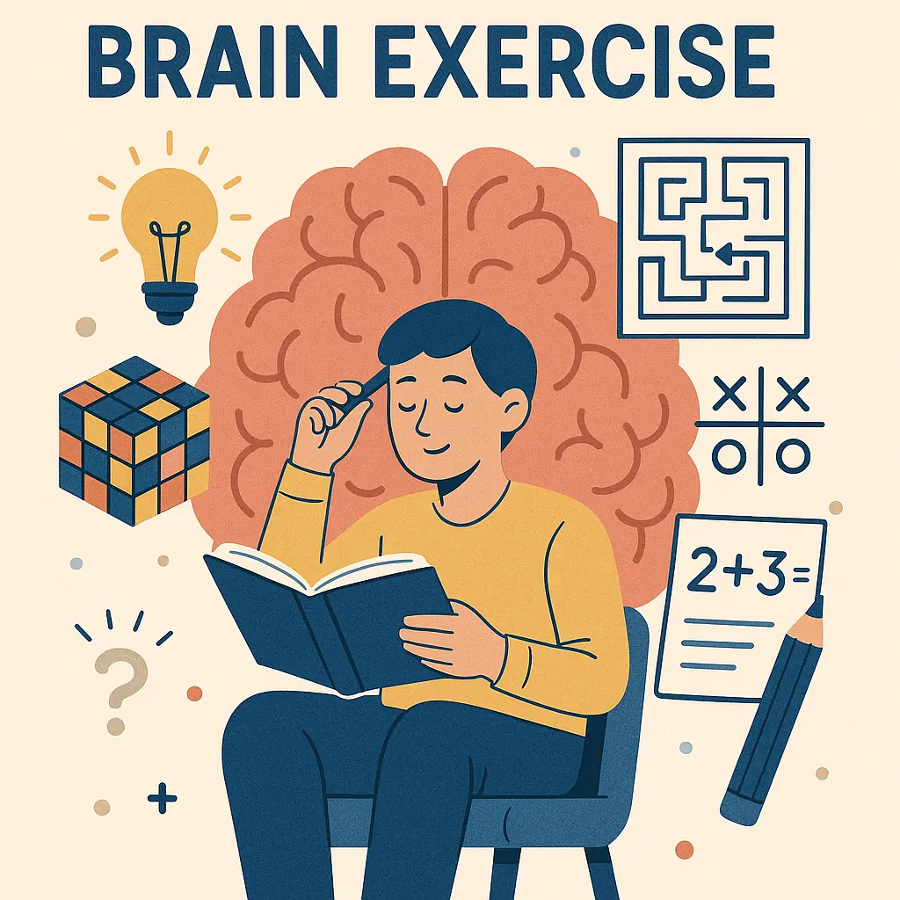
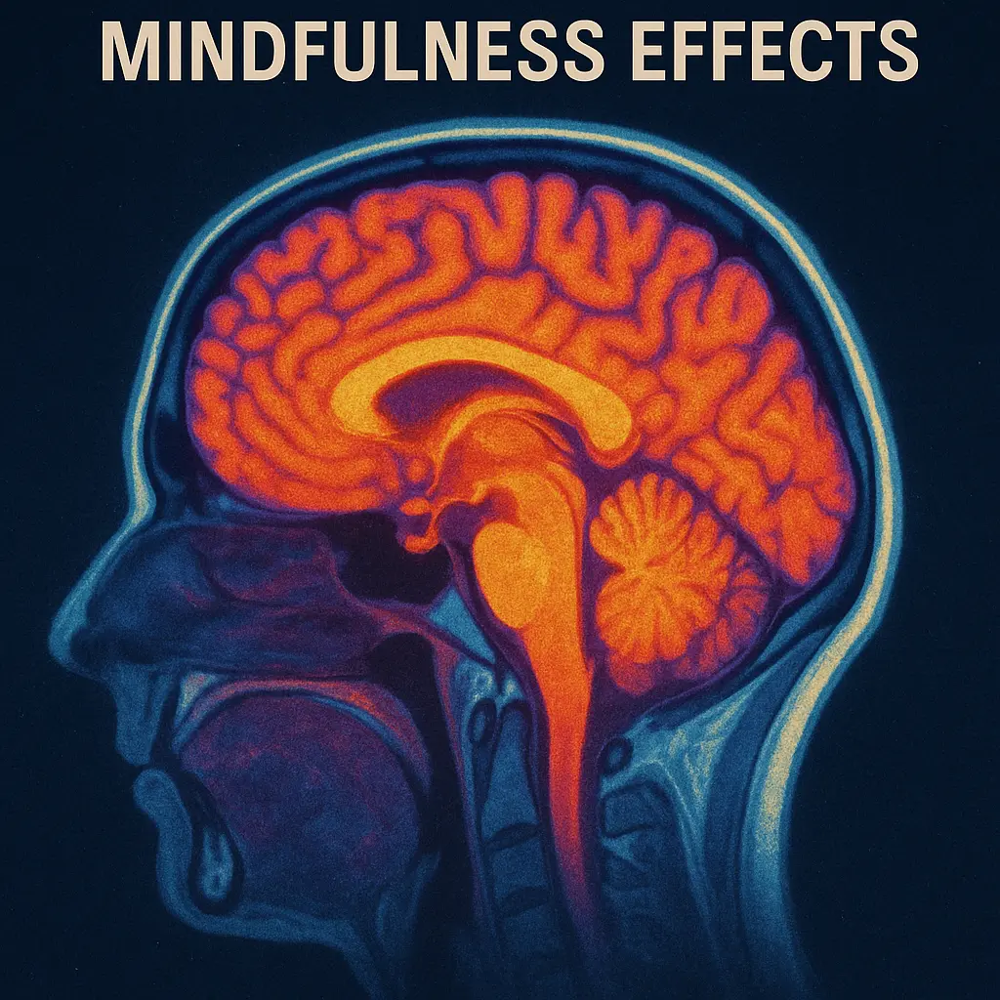

Quick Answer: Mental fitness means keeping your brain active and healthy through exercises, good habits, and stress management. It improves memory, focus, mood, and overall cognitive function.
What Is Mental Fitness?
Mental fitness refers to the brain’s ability to process information, adapt to new situations, manage stress, and sustain concentration. It requires active care like physical fitness but focuses on cognition and emotional health.
Just like muscles, your brain needs regular workouts through learning, problem-solving, and mindfulness. This maintains neuroplasticity — the brain's ability to form new neural connections.
Why Mental Fitness Matters
- Improves memory and learning ability
- Enhances focus and productivity
- Reduces risk of cognitive decline and dementia
- Improves emotional resilience and mood regulation
- Helps manage daily stress more effectively
Mental fitness supports success in work, relationships, and personal growth by keeping your mind sharp and adaptable.
Scientific Evidence
Research shows that cognitive exercises and mindfulness reduce mental decline and improve brain function.
How to Improve Mental Fitness
- Regular Brain Exercises: Puzzles, memory games, and learning new skills.
- Physical Activity: Exercise increases blood flow to the brain and supports neurogenesis.
- Mindfulness and Meditation: Reduce stress and improve attention span.
- Quality Sleep: Sleep consolidates memory and clears toxins from the brain.
- Healthy Diet: Omega-3 fatty acids, antioxidants, and vitamins support brain health.
- Social Interaction: Meaningful relationships stimulate cognitive and emotional functions.
Common Mistakes People Make
- Neglecting mental rest and relaxation
- Relying only on digital devices without active brain engagement
- Ignoring physical health’s impact on brain function
- Underestimating the power of social connections
FAQs
How long does it take to improve mental fitness?
Improvements can start within weeks but require consistent practice over months for lasting effects.
Can mental fitness prevent Alzheimer’s disease?
It can reduce risk factors and delay onset but does not guarantee prevention.
Do brain training apps really work?
Some provide benefits in specific skills but must be combined with broader healthy lifestyle habits.